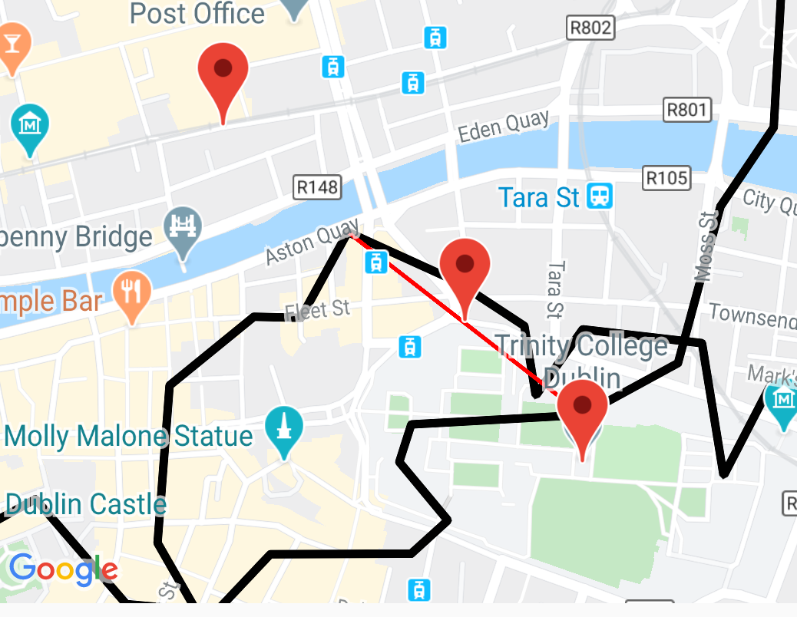

Reflection
Thursday March 5, 2020
Our final blog post before the deadline at 5pm. What a valuable experience we had creating our project. We will probably come back to this blog in the future when we have our result back. It will be interesting reading this blog when that time comes.
Michael: I have learned so much in 3rd year alone. This project forced us to learn and think critically. Of course, it was stressful but I think we have really improved plenty of vital skills like public speaking, planning, thinking, and especially improved our coding skills. Before I started, I was very iffy using Git and now I feel I am very capable of using it. Just in time for our placement in at the end of March.
I appreciate this rewarding project because I learned about Android Studio, Mapbox APIs, Google Maps APIs, REST and JSONObjects.
Gerard: Just like Michael I have also increased my technical knowledge considerable. While the learning curve was quite steep I enjoyed the experience and have benefited greatly. I feel as the project progressed and the app began to become more functional our efficiency as a team increased also. Having a project partner to discuss an idea with was a great help and increased my confidence in my technical skills. While there are some things that I would consider changing if I was doing the project again, I am happy overall with how we performed.
Screencast and Chipotle
Thursday March 5, 2020
Today we had our final meeting with Mark before the project presentations next week. All the groups Mark is supervising gathered together with the opportunity to ask questions. User testing today exposed some ranking bugs which resulted in the meeting points returned being inaccurate. Michael realised that for some edge cases we were overwriting the midpoint between two isochrone points. This experience alone has influenced our belief in user tests and its uses. We began our recording of the screencast video and worked into the night to get it finished. We are very happy with it because we used a really great microphone. Maybe we'll start a podcast?
Manual Handling
Wednesday March 4, 2020
As deadline on Friday approaches, we have fixed some bugs, some errors, and fixed up the appearance of the code. We are happy with our app so we will focus on finishing the user manual and technical manual. All the fun parts are finished as we think about our project demonstrations.
Tomorrow we meet Mark with all the other pairs to have a meeting about the demonstrations next Wednesday. We both agree that public speaking is never fun so hopefully he has some good tips.
Leaps (year) and Bounds
Saturday February 29, 2020
Fully functional and time to spare.
That's a sentence we are happy to write.
Between today and yesterday, we were able to finish the app. We now had a fully working app. Users can now click on places and that place will be shown on the map. The user can also favourite the place and then see their favourite places in the Saved Places activity. If the user has many places saved, they can go to the profile page and delete them all.
There is now a settings page that makes the Best meeting point optional and the isochrone builder optional.
Our to-do list is getting smaller and smaller. From here until the deadline next Friday we will continue to refactor our code in response to user tests and structuring and finish off the specifications.
Parse, Get and Show
Thursday February 27, 2020
Today was the most productive day out of any other. Confidence was through the roof with the amount of changes we implemented.
- We first started today by adding error checking to ensure all search fields are filled out before executing the search process.
- We then implemented a JSON response parser to work with the google maps places API to give us meeting points.
- A dropdown menu was also added to the search screen, this allows the user to specify what sort of meeting place they wanted.
- Supplying the midpoint we calculated on Wednesday to the API returned to us places of interest and the option selected from the dropdown filtered the result.
- Next, to display these results to the user we implemented a recycler view instead of 3 fixed text views. This allowed us to show the points of interest in a scrollable manner using a card view.
- Next to these results on the card we added a favourites button to store a favourite place the user can access again.
Our next course of action will be implementing the logic behind the favourite button and storing these locations in firebase. Furthermore, we want to be able to a click a recycler view item and show this location on the map using a pointer. At the minute we need to discuss whether we want the isochrones to be drawn on the map or not.
With all these changes in mind, we think we can see the finish line. Fingers crossed.
Algorithmic Development
Wednesday February 26, 2020
We decided to implement an algorithm that finds a midpoint that we can look for nearby places from. We did this by finding the closest coordinates on the isochrone to the opposite point and then using interpolation. It is a better choice to use this point to get nearby Points of Interest than the normal midpoint.
Don't worry, we confused ourselves too trying to write that paragraph.
Polylines
Monday February 24, 2020
Isochrones are added on top of the map and they change in reponse to the option the user makes. Walking, cycling, or driving.
What we want to focus on now is returning Points of Interest and then saving those places to firebase.
Adding Markers
Monday February 17, 2020
Lectures are all finished and the main priority is the year project with 3 weeks left.
The user can now enter 2 coordinates and the locations will be added as markers onto the map. We want to have the geocoding and autocomplete to be working for convenience.
We decided to re-think our approach to getting the current location and would not focus on it for the minute. It was not as straight-forward as we thought it would be and had consumed a considerable amount of time and effort already.
We created a logo ourselves and loved it.

Let Us Out?
Wednesday February 12, 2020
Signing out and being able to delete accounts has been added today. Plenty of work has been done on the design of the different home pages. Now that lectures are finished, we aim to start implementing the Mapbox features.
We will start by adding small features like getting markers onto the map. We're likely to be more active going forward, so get ready to hear lots more from the TastyTravel crew.
Small steps.
Let Us In!
Tuesday February 4, 2020
Signing in and signing up using Firebase was added by Gerard. By following the website documentation and tutorials we got it working.
While it caused a lot of frustration integrating the services, it relieved some stress to see the end result. Firebase will be used for user authentication when logging in and out, as well as saving users favourites.
Working Map and Logging In
Friday January 31, 2020
Michael worked on getting Mapbox integrated into the project, which was a challenge in itself. The coordinates of Dublin City were added and we got the map view to focus on these. This felt like a small success getting it working. We were initially impressed by Mapbox and the available features, however their documentation has been very difficult to navigate and is sparse at times.
Post-Exam Blues
Tuesday January 28, 2020
After a strenuous study 'break' and two weeks of exams we are back at it. It's no exaggeration to say that the project hasn't been getting the attention it deserves. However the first commit to Gitlab for Android Studio was made today. It included the initial screen created from the mockups. We are only six weeks out so a lot of learning needs to be done.
System.out.print("Merry Christmas");
Thursday December 12, 2019
Coming closer to the Christmas holidays we realised how valuable the time over Christmas and into the new year will be on getting a grasp on the project while remaining focused on studying for the exams. Mark has advised us to try and get a protoype algorithm working over the festive period, so we have added his request to the todo list. It will be neccessary however to focus solely on exam study from the begining of January onwards, since exam season arrives earlier in the new year unfortunately.
Getting Technical With IT
Tuesday December 3, 2019
After a two week stint, we are nearly finished writing the specification of our app, which defines our technical approach to the project. We organised a meeting with Mark so that we can stay on track and run through some find details before we submit the final spec. As part of the specification we designed a gantt chart which has clarified the time frame given for each section of thre project. Our plan for the meeting will be to talk about the presentation and what we have to continue doing. Some doubts have arisen regarding the specification and the level of detail required, so we plan on clarifying that also.
The Longest 5 Minutes
Friday November 15, 2019
We had our Five minute presentation with Monica Ward and David Sinclair today. They accepted our project and we were greatful for their feedback. It highlighted concepts of the project we were unaware of thus far. Some of the most important points they made were:
- The need to add user profile, with possibly a filter.
- We need to be able to stand over UX design and testing.
- We will have to be careful with database design.
- We will need to make it complex enough for our level of knowledge.
Next on the agenda is completing our projects technical specification.
All Together Now
Tuesday November 1, 2019
Today we met with Mark along with all his other mentees about the proposal presentation. He told us what to expect and how to prepare. We decided that creating a powerpoint will help us communicate the concept of our app better, rather than just verbally explaining the idea.
Deadline Day
Thursday October 31, 2019
The first submission is due tomorrow, the 1st of November. We have to have our project proposal finished and a supervisor confirmed. We were a bit anxious this week because our mentor had not been replying to emails only for us to find out he had been away the previous few days.
We organised a meeting for today and he was willing to supervise and approved the project proposal! All hands on deck from now on!
Names and Structure
Wednesday October 23, 2019
Unsurprisingly, picking a project title was difficult. We shortlisted on a list of names that we really liked and decided to weigh up the pros and cons of each name. We decided on TastyTravel after a lot of thought because of how simple it is and it has nice alliteration. The project name was needed to name our application package in Android Studio as well as naming our repo on Gitlab.
It felt good to get a start on the project. Having set up the repo, we added our team on the project dashboard which made things even more real. The next step we took was to create the repo structure as set out in the guidelines defined by David Sinclair.
Consultation Fees
Wednesday October 16,2019
Next we have to acquire a project supervisor, we decided during the week that Mark Roantree would be great as our mentor because he gives good constructive criticism. During Marks module in second year we liked his approach to teachning so we felt he would be the best option.
We met him today to talk over our project and as we expected, he was honest about our project's weaknesses. The main points of the meeting were that we had to use an ALGORITHM and not just rely on API's. Mark liked the idea of a travel app but reccommended an algorithm that helped two people meet rather than organising a trip activities. We felt more confident on our approach to the somewhat ominous project coming out of that meeting.
Muddy Water
Thursday October 10,2019
Since last week, We have expanded on the idea of a travel app. We both used the application 'Google Trips' quite frequently in the past, however it has since been discontinued. Taking our own twist on this app would be a venture we would love to do, however we have our doubts how algorithmic this would actually be. Thinking about the idea in depth, we can see clearer that we would just be retrieving data and storing data, likely in a database. We therefore have decided to stick with this concept but make it more functional by implementing an algorithm.
It's Alive
Tuesday October 1, 2019
Our First introduction to the 3rd year project was given today. David Sinclair discussed what was expected from all of us and the relevant deadlines. It seems like a lot of work and quite scary but we will tackle each problem as they come. We began by brainstorming some project ideas that both of us would like to implement. Some key ideas we really like are developing a travel app or some useful application based around sport or music.
About Us
Welcome! We are Michael Savage and Gerard Slowey.
We are 3rd year students and this blog shows the development of our year project, TastyTravel.
We plan to create an Android app that allows the user to search for places to meet for food and drink.
The user will be able to login and save these places for future dates.